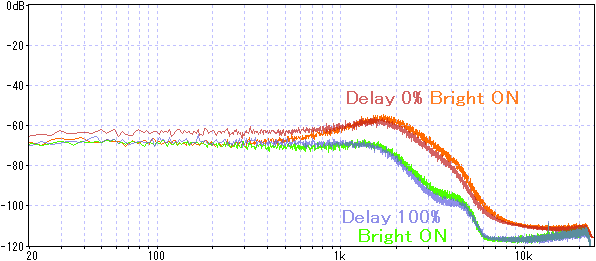

MXR M299 CARBON COPY MINI ANALOG DELAY 解析
2023年11月22日 カテゴリー：修理・改造・解析
通常バージョンのCARBON COPYに引き続き、CARBON COPY MINIのジャンク品も手に入ったので解析することにしました。KiCadデータ（基板画像入り）はGitHubにあります。
▽回路図
幸いにも通常のCARBON COPYからほとんどの部品番号が変わっておらず、トレースはそれほど苦労せずに済みました。主な変更点は、ブライトスイッチ周辺と電源部です。BBD入力部の抵抗（R43、R54、R63）が27kΩ→10kΩになっているので、若干低音域のカットに影響しているかもしれません。
下図はSA571のデータシートから抜粋した内部回路の一部です（赤字はピン番号）。反転増幅のようになっています。
ブライトスイッチは、5ピン・6ピン側の抵抗とコンデンサを調整することで高音域側を強調する仕組みになっていると考えられます。
R48を外し、ディレイ音の周波数特性を測定しました。通常のCARBON COPYの時と同様ホワイトノイズを使用しています。

ディレイタイムが長い時、ブライトスイッチによる変化は少ないように見えます。（コンパンダのせいでうまく測定できていないかもしれません。）
【修理】
ディレイ音が出ない状態だったので調べていくと、SA571の出力レベルが低かったので交換しました。トレースの際に付け外ししたので、その時の熱が原因で壊れた可能性があります。SA571交換後、またも不調になったので調べると、表面実装トリマーとタンタルコンデンサに不良のものがありました。念のため、全てのトリマーとタンタルコンデンサ・電解コンデンサを交換することにしました。販売開始（2019年）からそれほど時間が経っていない割にジャンク品が出回りやすいような気がするので、あまりパーツの質が良くないのかもしれません。